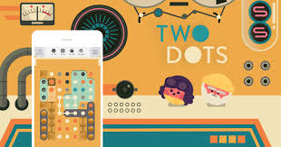
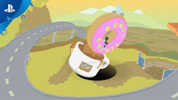

My Top 10 Games on the Apple App Store
- Game Dev Tycoon
- Space Marshals (1 and 2)
- Mini Metro
- Egg Inc.
- Monument Vally
- Stardew Valley
- Packo 2
- Sonic 1
- 80 Days
- Donut County
Honorable Mensions:
True Surf
Two dots
True Surf
Because I love surfing, this is one of my favorite games. It is by far the best surfing game on the market, and the only reason I didn’t put it on the list is due to its youngness. It is a great surfing game, but it has only had a few updates and needs to get a few great updates to help it along. It is one of the best games to play when you have little time, because the game is so causal and doesn’t play with levels or any sort of checkpoints you need to hit.
Two Dots
Two Dots is one of the most fun puzzle games out there. You try your best to connect dots to get rid of them, either with a restricted time limit or move limit. It looks very nice with beautiful graphics and with different levels that go up in difficulty. Each level takes about 5 to 10 minutes and you can't start in the middle of a level, but it overall is a great game if you like puzzle games.
10. Donut County
This game is quite a stupid concept, but it is surprisingly very fun and satisfying. You are a hole and your goal is to fit everything in side of you to beat the level. You also get to learn a very weird back story. The levels are very aesthetically pleasing and calming. Its a great puzzle game that is fun, but does cost $5.
9. 80 Days
This game is an epic game where you travel the world trying to collect as much stuff to make the most money you can in 80 days. It’s a great game, but takes quite a while to play each game, which is quite a down side, but it is a great game to play if you got the time. It has a great journey and is quite fun to play with and explore.

8. Sonic 1
This game is a classic and is perfectly implemented for the iPhone. There isn’t no reason Sonic is such a popular game, it is so much fun. I find it a great arcade game to play when I’ve got some time to waste. I get so much satisfaction out of beating each level and learning the story, because I never played or beat the game before. Best of all, its free!

7. Pako 2
This game is a great game to play for a long time or just for one round. It is built to be perfect to play for any amount of time and anywhere. I find that it is perfect for anyone that isn’t going to play for hours, but is looking for a game that has some sort of structure. The basis of the game, is you are a getaway driver for some crooks, and you get money for taking them to the place they want to go. You also only get 3 factors you get to control, turning right, turning left and using a rechargeable boost.
6.Stardew Valley
This is one of my favorite games of all time, where you primarily farm land, but there are hundreds of other things to do in the game. You also must mine and fish in order to beat the game. Also you get to make friends with other characters in the game and eventually, possibly, get married. The only downside to the great game is that it is $8, and fairly new on the ios app store, but if you have $8 in your itunes account, this is a great game to spend it on.
5. Monument Valley
This is a super fun, and sometimes impressive puzzle game. This game really messes with your perception of reality, having about 3 optical illusions per game. In addition this game almost always looks very nice and soothing. It is a great game that you can play anytime for any amount of time. It is $4 but it you have that money laying around, this is a great game to use it on.
4. Egg Inc.
This game is a super simple, casual game that is unexpectedly so much fun. You act as a rancher who clicks on a button to hatch one chicken. The more times you click, the more chickens you get, the more money you can make, but there are three factors to watch out for: how much room for chickens you have, how fast you can ship the eggs, how long you can click before having to recharge. It is amazingly fun game and it is free.
3. Mini Metro
Fun casual puzzle game, that looks simple but is very very fun. It also is one of the games that you can play whenever however you want. It is $4 but it is well worth the price and this would be my #1 on my list, if I liked puzzle games the slightest bit more. It is also really fun to play in different cities, which makes it so much fun. It also has some other game modes to play in a creative or endless mode. It does get progressively harder as you move on to other cities witch makes it so much more entertaining and more customizable to what kind of puzzle you want to do.
2. Space Marshals (1 and 2)
Simple-looking, fun third-person shooter stealth game, where your goal is to take down enemies without taking much damage or alerting other enemies.It may be slightly expensive being about $2, but definitely worth it, and a great game to play level by level trying to beat levels in order to get better equipment for the next round. With a great plot. An even if you beat the game, you can either replay levels, which is almost as fun as playing them the first time, or you can play Space Marshals 2 which is just as fun as the first. Over all, one of the best games I have on my phone and would recommend to anyone.
1. Game Dev Tycoon
I love this game and the way you can develop and start a company and go on a journey to watch your company grow, flourish then die. It is very entertaining and fun to explore. I love the way you can make a ton of money and you get to choose what to do with it. It is extremely inspiring as well and fun to explore. However, it does cost $5, but is worth every penny. Definitely my favorite game to play on my phone. It does take about 20 minutes per game, depending on how good you are, but you can pause and come back at anytime.